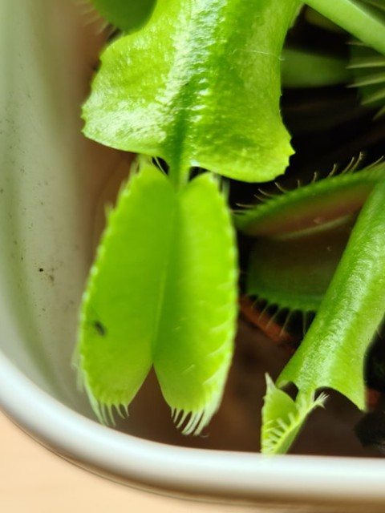
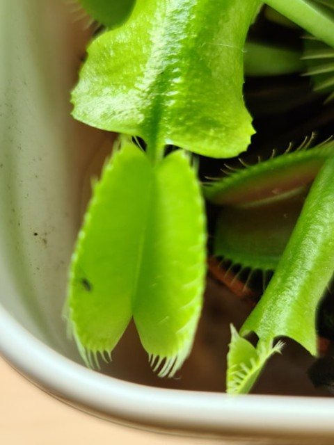

| Nom et photo | Exposition | Arrosage | Rempotage | Saisons |
|---|---|---|---|---|
| Dionaea muscipula |
Lumineuse avec soleil direct une partie de la journée, soleil d'été après acclimation. | Doit rester toujours humide, laisser tremper constamment dans l'eau sauf en hiver. Uniquement eau de pluie. | Mélange de fibre de coco avec du sable de rivière. Pot en plastique adapté au nombre de plantes et dans un cache-pot blanc pour qu'il n'absorbe pas trop la chaleur au soleil. | Été dehors et en hiver intérieur au frais ou dehors sous abri. |
 

| Nom et photo | Exposition | Arrosage | Rempotage | Saisons |
|---|---|---|---|---|
| Nepenthes |
Lumineuse sans soleil direct, soleil d'hiver sans danger. | Doit toujours rester humide, à besoin dune bonne humidité ambiante. Uniquement eau de pluie. | Mélange de fibre de coco avec du sable de rivière. Bac en plastique en suspension. | Été intérieur ou extérieur et en hiver en intérieur pas dans une pièce trop fraîche. |

| Nom et photo | Exposition | Arrosage | Rempotage | Saisons |
|---|---|---|---|---|
| Pinguicula |
Lumineuse sans soleil direct, soleil d'hiver sans danger. | Doit toujours rester humide, à besoin dune bonne humidité ambiante. Uniquement eau de pluie. | Mélange de fibre de coco avec du sable de rivière. Bac en plastique en suspension. | Été intérieur ou extérieur et en hiver en intérieur pas dans une pièce trop fraîche. |
| Nom et photo | Exposition | Arrosage | Rempotage | Saisons |
|---|---|---|---|---|
| Sarracenia purpurea |
Lumineuse avec soleil direct une partie de la journée, soleil d'été après acclimation. | Doit toujours tremper dans l'eau, peut tremper jusqu'au collet. Uniquement eau de pluie. | Mélange de fibre de coco avec du sable de rivière. Pot en plastique dans un cache-pot blanc pour qu'il n'absorbe pas trop la chaleur au soleil. | Été intérieur ou extérieur et en hiver en intérieur dans une pièce fraîche ou dehors et supporte très bien le gel si le pot est protégé. |